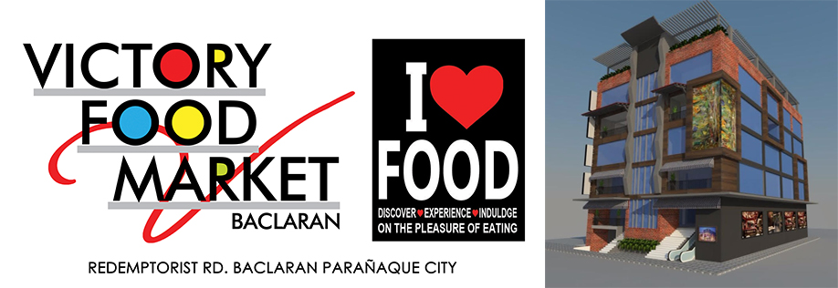
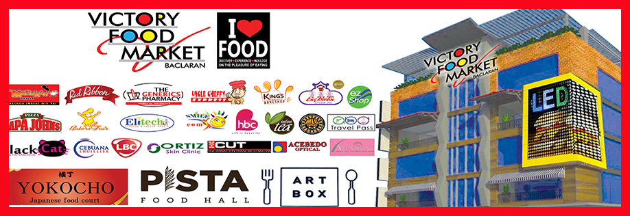

Home > About Us > VFM Baclaran
Victory Food Market Baclaran
Victory Food Market is 9 storey commercial building located in Redemptorist Road, Baclaran, Paranaque City. The building has access along Redemptorist Road (fronting Baclaran Church) and Bayanihan. With the growing population of Baclaran - 1st District of Paranaque, (30,000) it is now viable option for Franchises, Food, Entertainment, Medical, Services and Apparel and other related products and services.
Features: | >>click here<<
Transport Hub
Established along Redemptorist Road (fronting Baclaran Church) JEEPNEY route Baclaran - Monumento,